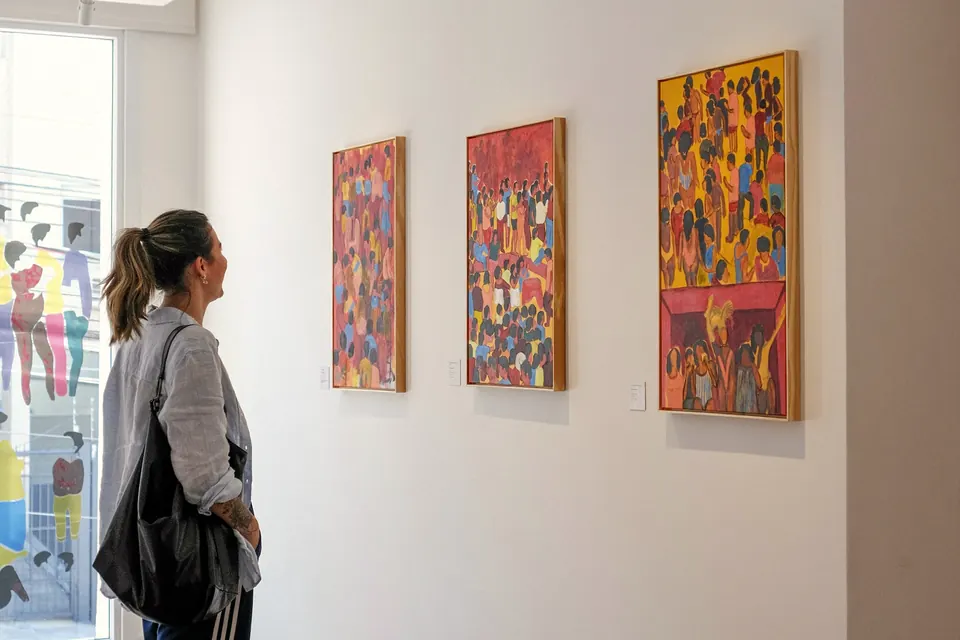
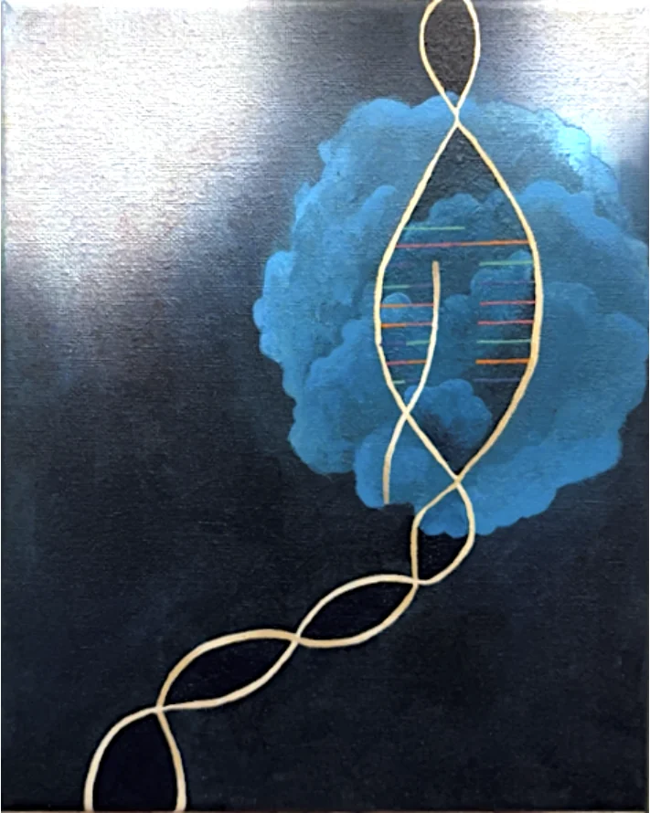
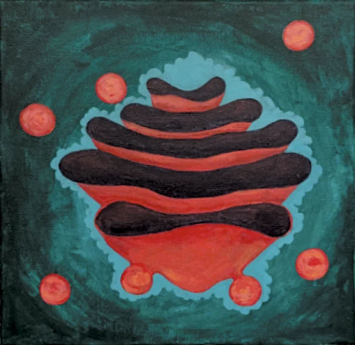

Interphase
The cell grows and copies its DNA. The chromosomes are loose, stringy and tangled together, so no single one stands out yet.
Look for the messy, jumbled strands.
My seven paintings, in two series. Read each title card beside its painting, the way you would in a museum.

One cell becoming two, painted as five stages. Human cells carry 46 chromosomes, so I painted only a handful to keep each stage easy to read.
The cell grows and copies its DNA. The chromosomes are loose, stringy and tangled together, so no single one stands out yet.
Look for the messy, jumbled strands.
The copied chromosomes coil up tight enough to see, and spindle fibers begin to form at opposite ends of the cell.
Look for the X-shaped chromosomes floating free.
The chromosomes line up across the middle of the cell. Each one is two identical sister chromatids joined at the center, with spindle fibers attached from both sides.
Look for the line of chromosomes down the middle.
The spindle fibers pull the sister chromatids apart, and each half moves toward an opposite end of the cell.
Look for the chromatids pulling away from each other.
A new nucleus forms at each end, and the cell pinches in at the middle until it splits into two cells.
Look for the pinch in the middle.
How a gene becomes a protein. In the nucleus, a gene's DNA is copied into messenger RNA (transcription). A ribosome then reads that RNA and links amino acids into a protein (translation), and the Golgi apparatus packages the finished protein.

Inside the nucleus, the DNA double helix unzips, and one strand is copied into a single strand of messenger RNA. That copy carries the gene's instructions out of the nucleus.
Look for the new strand forming inside the open section of the helix.

Newly made proteins pass through the Golgi apparatus, a stack of flattened sacs that sorts and packages them. Small bubbles called vesicles bud off the edges and carry the finished proteins where they need to go.
Look for the stacked sacs and the round vesicles around them.
That drop happened between 2019 and 2024. See the research that shaped my exhibit and what studies say about learning science through art.